CS 180 · Project 1
Images of the Russian Empire
All images can be clicked on to view them in full resolution
Overview
The Prokudin-Gorskii photo collection were recorded onto a glass plate through a red, green, and blue filter. These gray scale images could then be tranformed, recolored, and then overlayed to produce a color image of the scene. In this project I explore how to take these raw glass exposures and turn them into colored images. Below is an example of the raw exposures and then the colored output after human manipulation
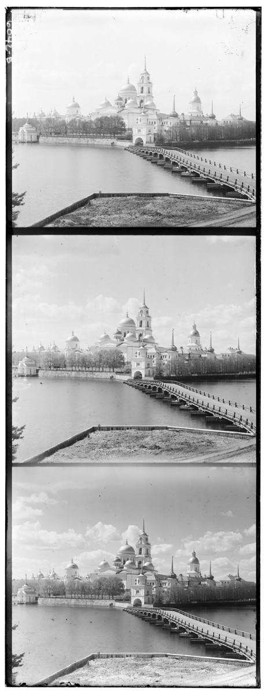
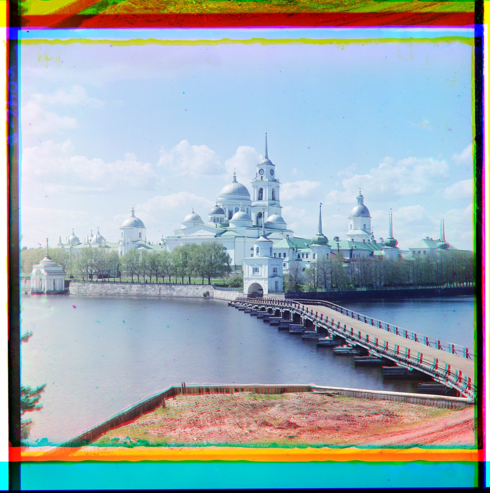
Single-scale search
The naive way to align the images is to take the assumption that the images are already somewhat closely aligned and all that is needed is to search a window of displacements to figure out which displacement optimizes some similarity metric. Speficially I fix the B channel and then compute transforms and scores by individually manipuylating the R and G channels relative to the B channel. I used L2 and NCC whose implementations are below. One notable aspect of the implementation is the usage of slicing to crop the image to make sure the similarity metrics are only measuring the actual content of the image and not the borders.
def l2(a, b, frac=0.15):
# manual crop
h, w = a.shape
ch, cw = int(h * frac), int(w * frac)
a = a[ch:h-ch, cw:w-cw]
b = b[ch:h-ch, cw:w-cw]
return np.sqrt(np.sum( (a-b) ** 2))def ncc(a, b, frac=0.15):
h, w = a.shape
ch, cw = int(h * frac), int(w * frac)
a = a[ch:h-ch, cw:w-cw]
b = b[ch:h-ch, cw:w-cw]
a = a - np.mean(a)
b = b - np.mean(b)
return -np.sum(a * b) / (np.linalg.norm(a) * np.linalg.norm(b))The actual alignment code takes in the two images, the scoring metric, how many displacements to test across each axis, the number of pixels each displacement takes, and a current_transform argument which can be thought of as a prior on where to start searching which is useful in the pyramid implementation.
def align(a, b, method, num_steps=15, step_size=1, curr_transform=(0, 0)):
best_transform = curr_transform # used when doing pyramid fine tuning on the way back up
curr_score = np.inf
# step through all possible displacements given by num_steps and step_size
for y_step in range(-num_steps, num_steps + 1):
for x_step in range(-num_steps, num_steps + 1):
transform = (
curr_transform[0] + y_step * step_size,
curr_transform[1] + x_step * step_size,
)
transformed = np.roll(b, transform, axis=(0, 1))
score = method(a, transformed)
if score < curr_score:
curr_score = score
best_transform = transform
# returns the transformed image and transform itself
return np.roll(b, best_transform, axis=(0, 1)), best_transform-
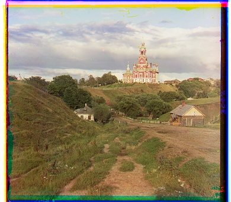
cathedral
G (2, 5) R (3, 12) t 0.14 s
-

monastery
G (2, -3) R (2, 3) t 0.14 s
-

tobolsk
G (3, 3) R (3, 6) t 0.14 s
Steps 15 Step size 1 px Border crop 15%
L2 against NCC
For the smaller images NCC and L2 yielded the same displacements but I chose to use NCC for the larger scale images since it is more robust to lighting variations in the image.
| Plate | Metric | G (x, y) | R (x, y) | Score G / R | Time |
|---|---|---|---|---|---|
| cathedral | L2 | (2, 5) | (3, 12) | 37.002 / 53.390 | 0.07 s |
| cathedral | NCC | (2, 5) | (3, 12) | -0.957 / -0.908 | 0.14 s |
| monastery | L2 | (2, -3) | (2, 3) | 25.997 / 49.540 | 0.08 s |
| monastery | NCC | (2, -3) | (2, 3) | -0.951 / -0.858 | 0.14 s |
| tobolsk | L2 | (3, 3) | (3, 6) | 26.752 / 51.880 | 0.08 s |
| tobolsk | NCC | (3, 3) | (3, 6) | -0.931 / -0.860 | 0.14 s |
Image pyramid
Running the single scale search on the larger TIF images is extremely inefficeint and takes a substantial amount of time to produce an alignment. Instead I adopted a pyramid based approach where I approximate the optimal displacement at a lower resolution and then refine the estimate at higher resolutions which should take a substantially less amount of time.
I downsample the images and run pyramid search recursively on the downsampled image. At the very lowest resolution I do a very dense alignment and return that transform which gets multiplied by two so it matches with the next highest resolution. Then using that transform I perform a small refinement pass in a 5x5 pixel window to see if there is a more optimal solution. I then repeat this all the way back to the top of the pyramid to produce a optimal displacement very quickly.
The levels can be clicked to view how much detail is lost at each downsample.
def pyramid_search(a, b, method, num_steps=15, step_size=1, min_size=256):
# at smallest scale perform the exhaustive alignment to produce a rough displacement
if min(a.shape) <= min_size:
return align(
a,
b,
method=method,
num_steps=num_steps,
step_size=step_size,
)
# downsample by a factor of two
a_downsamp = sk.transform.rescale(a, 0.5, anti_aliasing=False)
b_downsamp = sk.transform.rescale(b, 0.5, anti_aliasing=False)
_, coarse_transform = pyramid_search(
a_downsamp,
b_downsamp,
method=method,
num_steps=num_steps,
step_size=step_size,
min_size=min_size,
)
# need to multiply back the estimated transform by 2 to preserve scale
transform = tuple(2 * coordinate for coordinate in coarse_transform)
# refine course displacement
return align(a, b, method=method, num_steps=2, curr_transform=transform)Results
These are the results of running the pyramid pipeline using NCC as the score metric on all 17 full sized TIF images. All of the images aligned well except for the emir which is explored in the bells & whistles section.
-

cathedral
G (2, 5) R (3, 12) t 0.06 s
-
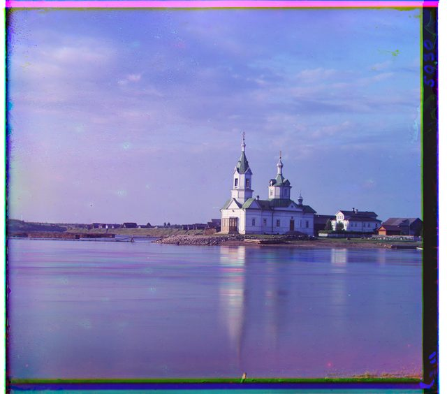
church
G (4, 25) R (-4, 58) t 1.00 s
-
emir (improper alignment)
G (24, 49) R (44, 63) t 0.99 s
-
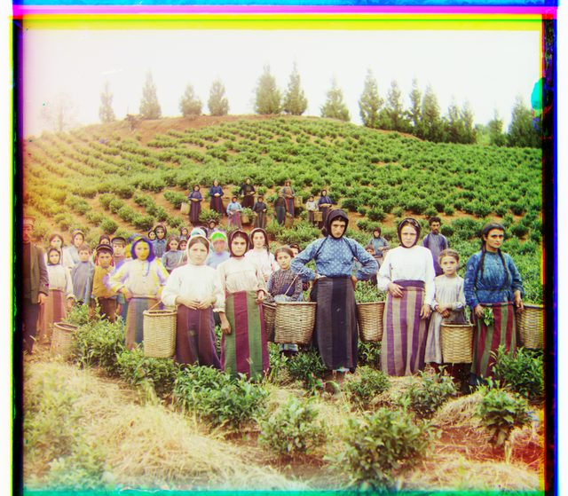
harvesters
G (17, 60) R (14, 124) t 0.98 s
-
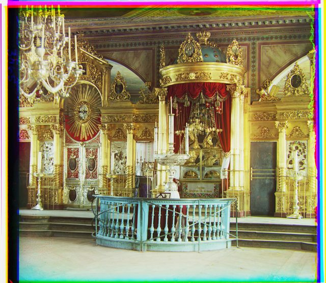
icon
G (17, 41) R (23, 89) t 1.02 s
-
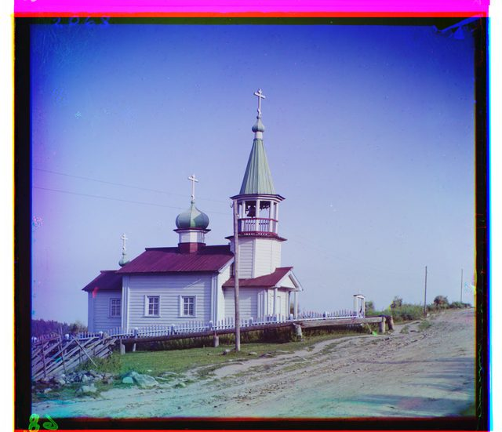
ilemselga
G (7, 40) R (11, 130) t 1.07 s
-
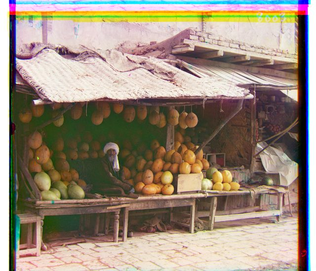
melons
G (10, 81) R (14, 178) t 1.03 s
-

monastery
G (2, -3) R (2, 3) t 0.06 s
-
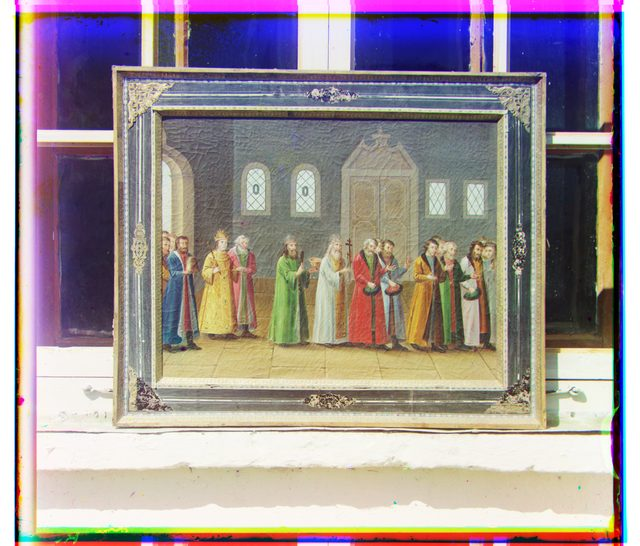
religous_painting
G (3, 28) R (7, 68) t 1.01 s
-
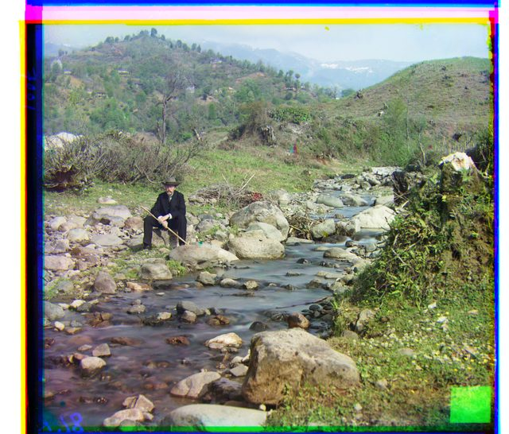
self_portrait
G (29, 79) R (37, 176) t 1.07 s
-
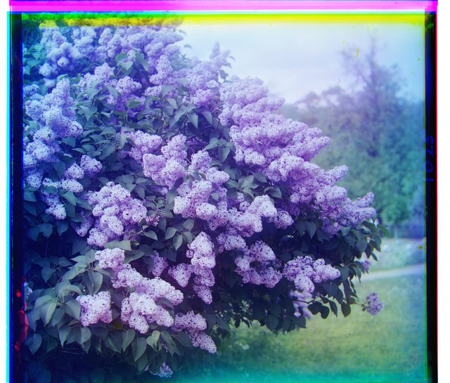
siren
G (-6, 49) R (-25, 96) t 1.20 s
-
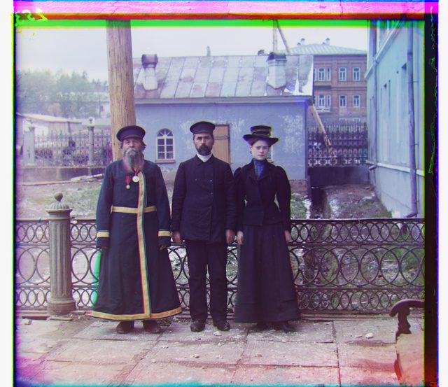
three_generations
G (14, 52) R (11, 111) t 1.00 s
-
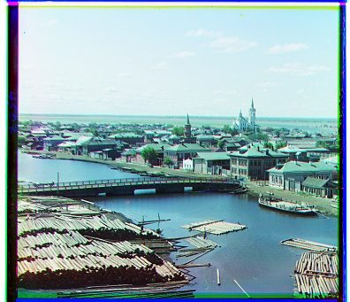
tobolsk
G (3, 3) R (3, 6) t 0.06 s
-
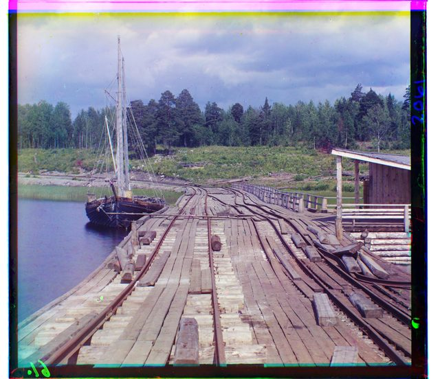
wharf
G (-7, 15) R (-16, 82) t 1.06 s
Plates I chose
-
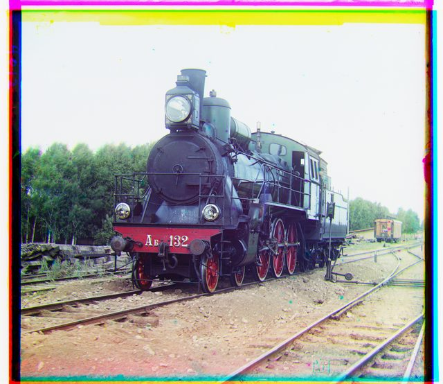
G (6, 43) R (32, 87) t 1.01 s
-
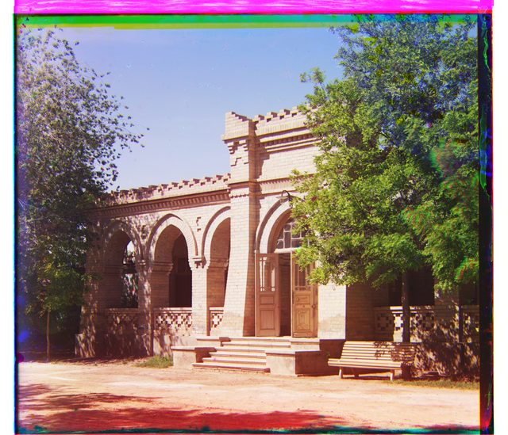
G (-12, 44) R (-27, 99) t 1.07 s
-
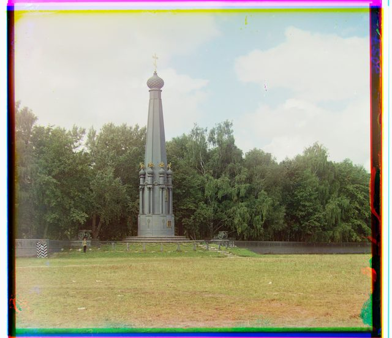
G (-15, 31) R (-29, 56) t 1.07 s
Bells & whistles
Sobel edge detection
The emir plates are quite interesting in that NCC and L2 fail to properly align the image. Out of all the source plates the emir is the only one with a deeply saturated color present in a large portion of the image which means that across channels that region will be very anti-correlated. Since the robe is a significant portion of the image it throws of the pixel based alignment methods. However edges should be similar across the channels so we can maybe use that to align the images. We can do this using convolution and sobel filters.
To start I first made a custom convolve function that takes in a single channel image and convolves it with a 3x3 filter and then returns the result.
def convolve(img, kernel):
h, w = img.shape
kernel = np.flip(kernel)
padded = np.pad(img, pad_width=1)
return sum(
kernel[i, j] * padded[i:i+h, j:j+w]
for i in range(3)
for j in range(3)
)I then defined the two sobel filters for extracting the vertical and horizontal gradients and convolved the image with the kernel. I then calculated the magnitude of the gradient at each pixel and that output represents the edges in the image.
def sobel(img):
# calculate gradients
gradient_x = convolve(img, KERNEL_X)
gradient_y = convolve(img, KERNEL_Y)
# take magnitudes of gradients
return np.sqrt(np.square(gradient_x) + np.square(gradient_y))Gradient magnitude, per channel
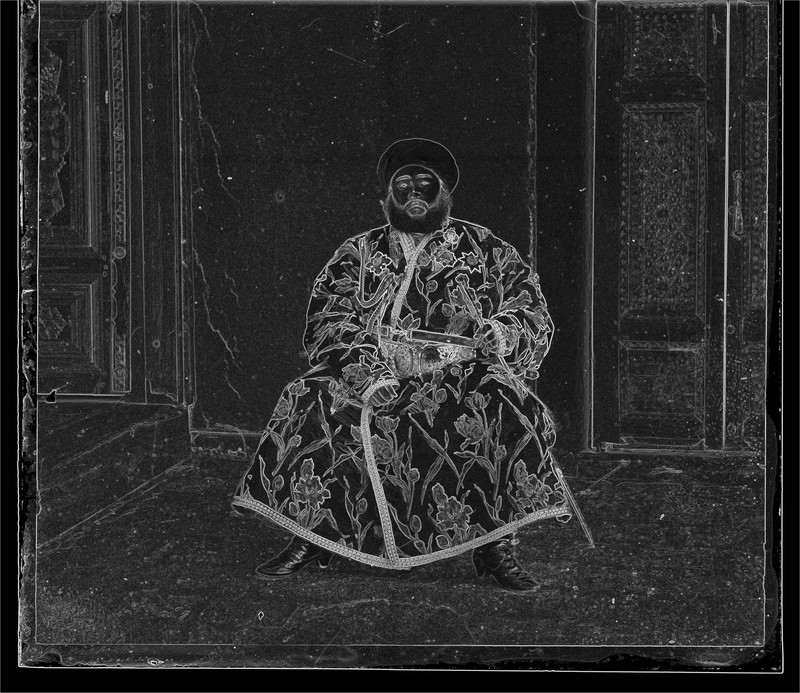
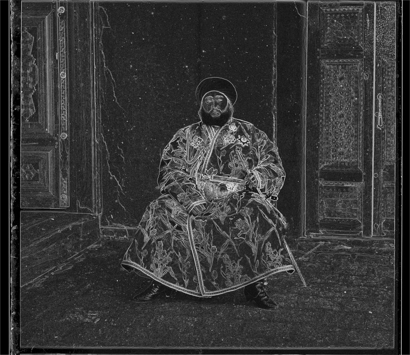
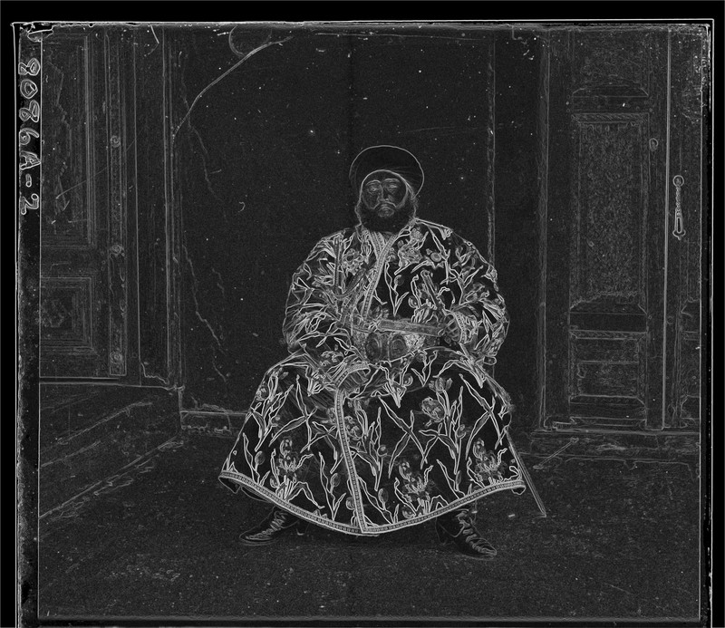
Magnitude of the gradients for the Emir plates across the red, blue, and green channels.
I can now perform pyramid alignment on the images above to produce an offset that is used to shift the original plates. As you can see below the Sobel alignment is significantly better than the raw alignment.
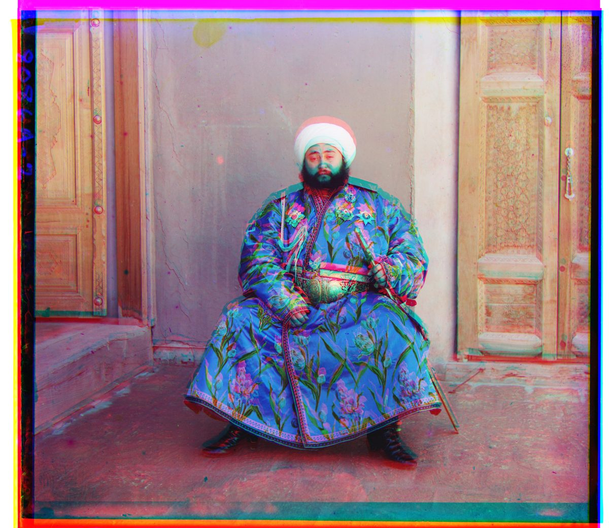
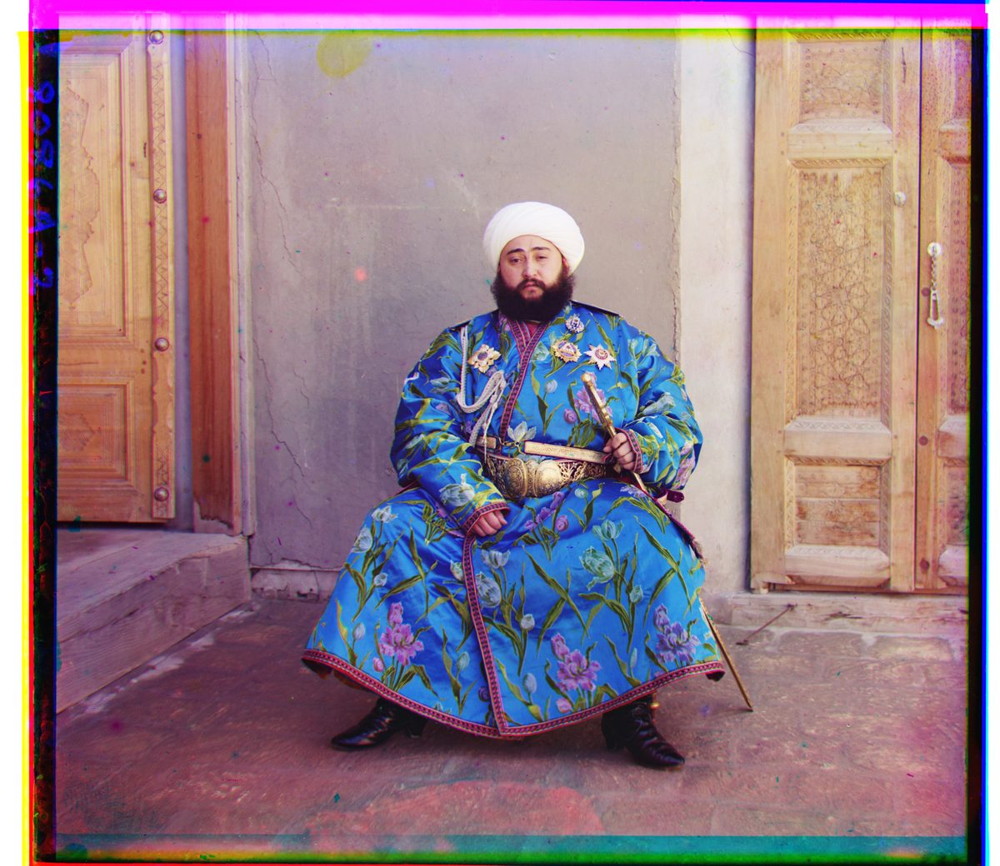
Raw Alignment.
Sobel Alignment.
Sobel vs Raw Alignment.
| Matched on | G (x, y) | R (x, y) | Score G / R | Time |
|---|---|---|---|---|
| Raw pixels | (24, 49) | (44, 63) | -0.677 / -0.235 | 0.99 s |
| Sobel gradient | (24, 49) | (40, 107) | -0.487 / -0.515 | 3.88 s |